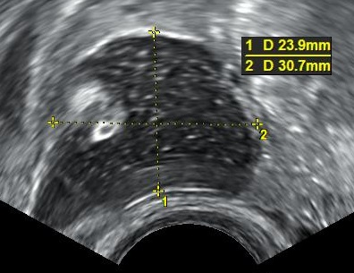

Ficha del catálogo
Teratoma ovárico maduro
- Sistema
- Reproductor
- Modalidad
- US
- Región
- Pelvis femenina, ovario
- Dificultad
- Intermedio
El teratoma quístico maduro, también llamado quiste dermoide, es el tumor ovárico benigno más frecuente en mujeres en edad reproductiva. Deriva de las células germinales y contiene tejidos maduros de las tres capas embrionarias, con predominio de elementos ectodérmicos como grasa, pelo y dientes. Suele ser un hallazgo incidental, aunque puede complicarse con torsión o, excepcionalmente, con rotura.
Técnica
El ultrasonido transvaginal identifica los rasgos característicos en la mayoría de los casos. La tomografía o la resonancia confirman el contenido graso cuando la ecografía es dudosa o la lesión es voluminosa. Las secuencias con saturación grasa son especialmente útiles para demostrar el componente adiposo.
Qué observar
- Nódulo de Rokitansky ecogénico proyectado hacia la luz del quiste
- Líneas y puntos ecogénicos correspondientes a pelo flotante
- Nivel graso líquido dentro de la lesión
- Sombra acústica intensa por calcificaciones o elementos dentarios
- Ausencia de vascularización interna en las porciones sólidas
- Signos asociados de torsión anexial en lesiones grandes
Hallazgos
En ultrasonido se observa una masa anexial con un componente ecogénico focal que produce sombra acústica marcada, conocido como signo de la punta del iceberg por la limitada visualización de su porción profunda. Las finas líneas hiperecogénicas entrecruzadas corresponden al pelo. En tomografía y resonancia se demuestra grasa macroscópica, con caída de señal en las secuencias de saturación grasa, junto a calcificaciones y ausencia de realce significativo.
Perlas
La demostración de grasa macroscópica en una masa ovárica es prácticamente diagnóstica de teratoma maduro. Ante una lesión anexial voluminosa conviene revisar siempre el pedículo vascular, porque el teratoma es una de las causas más frecuentes de torsión ovárica en la mujer joven.
Diagnóstico diferencial
- Endometrioma
- Presenta ecos homogéneos en vidrio deslustrado sin sombra acústica ni grasa, e hiperintensidad en T1 que persiste con saturación grasa.
- Quiste hemorrágico
- Muestra patrón reticular y coágulo retráctil, se resuelve en controles seriados y no contiene grasa ni calcificaciones.
- Teratoma inmaduro
- Es más sólido, heterogéneo, de crecimiento rápido, con grasa dispersa en pequeñas cantidades y marcadores tumorales elevados.
- Asa intestinal con contenido
- Muestra peristalsis y continuidad con el marco intestinal al observar en tiempo real.
Simuladores
- Asa intestinal llena de gas y material fecal
- Endometrioma con contenido denso
- Absceso tuboovárico con detritus ecogénicos
Por modalidad
- TC
- Confirma con facilidad la grasa macroscópica y las calcificaciones o dientes, y descarta implantes en caso de rotura.
- US
- Detecta los signos morfológicos característicos y valora el flujo ovárico ante la sospecha de torsión asociada.
Protocolo
Ultrasonido transvaginal con transductor de alta frecuencia complementado con abordaje transabdominal en lesiones grandes, ajustando la ganancia para no enmascarar los focos ecogénicos. En resonancia se emplean secuencias potenciadas en T1 sin y con saturación grasa, T2 y estudio con contraste para descartar componentes sólidos con realce. En tomografía basta la fase simple para identificar la grasa.
Clasificación
No existe una clasificación específica; la lesión se integra en los sistemas de estratificación de riesgo de masas anexiales por ultrasonido, que la sitúan en las categorías de bajo riesgo cuando cumple los criterios morfológicos típicos y carece de flujo en las porciones sólidas.
Errores frecuentes
- Pasar por alto la lesión al confundir su patrón ecogénico con gas intestinal
- No valorar el flujo ovárico y omitir una torsión asociada
- Interpretar la sombra acústica intensa como artefacto y no medir la lesión en su totalidad

teratoma quiste dermoide nódulo de Rokitansky grasa macroscópica punta del iceberg ovario torsión